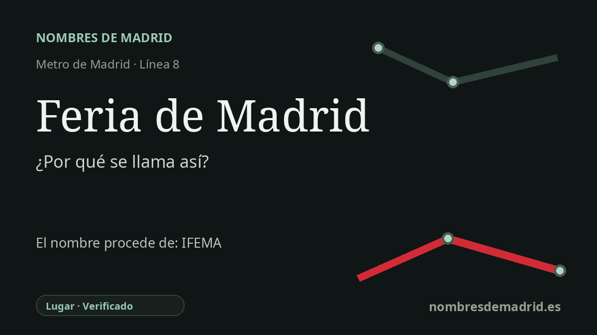

Publicado el · Investigación de Nombres de Madrid · Cómo verificamos cada origen · 5 fuentes consultadas
Respuesta rápida
Feria de Madrid recibe su nombre por los recintos feriales de IFEMA MADRID situados junto a la estación. Se llamó Campo de las Naciones desde su apertura el 24 de junio de 1998 hasta que el nuevo nombre entró en vigor el 26 de junio de 2017.
La historia del nombre
El nombre actual **Feria de Madrid** es un topónimo funcional: orienta al viajero hacia el principal recinto madrileño de ferias y congresos, hoy identificado como IFEMA MADRID. La estación está junto al complejo ferial de la avenida del Partenón, de modo que el nombre actúa más como señalización de un destino importante que como una dedicatoria histórica.
Hasta 2017 la estación se llamó **Campo de las Naciones**. Ese nombre anterior correspondía al complejo urbanístico y cultural desarrollado en el nordeste de Madrid, donde los recintos feriales, el Palacio Municipal de Congresos, oficinas, hoteles y el Parque Juan Carlos I formaron un nuevo ámbito metropolitano. El Ayuntamiento de Madrid presenta el Campo de las Naciones como una gran actuación ya prevista en el Plan General de 1985 y relacionada con la Capitalidad Europea de la Cultura de 1992.
La estación abrió el **24 de junio de 1998** dentro del tramo de la línea 8 entre Mar de Cristal y Campo de las Naciones. Durante casi un año fue cabecera exterior de la línea; el **14 de junio de 1999** la línea 8 se prolongó hasta la estación entonces denominada Aeropuerto. Las obras de 2002 llevaron la línea 8 hasta Nuevos Ministerios, pero no fueron la inauguración de esta estación concreta.
El cambio de nombre fue anunciado por la Comunidad de Madrid el **7 de junio de 2017** y entró en vigor el **26 de junio de 2017**. La explicación oficial fue clara: la nueva denominación ayudaría a los usuarios a asociar la parada de Metro con los recintos feriales de IFEMA, un gran foco de actividad ferial, congresual y de turismo de negocios. Es decir, el cambio dio prioridad al destino cotidiano frente al nombre más amplio del distrito.
Dentro de la estación queda una huella del nombre anterior. La página de infraestructuras de la línea 8 describe el mural *Rostros de las Naciones, una sola bandera*, una obra cerámica de gran longitud con rostros, banderas y citas internacionales que expresa el tema del antiguo Campo de las Naciones. La etimología queda por tanto verificada, con una corrección: la estación toma su nombre de los recintos feriales, no de una persona, y su año de apertura debe registrarse como 1998.